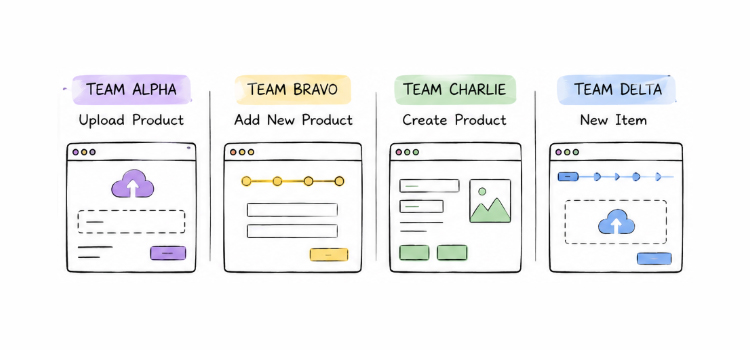
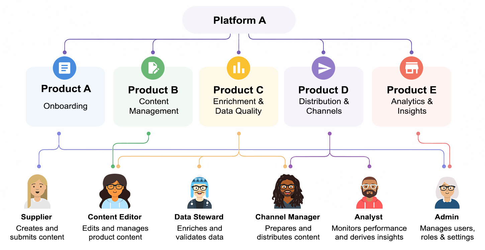

Stibo Systems · Design Systems · Ongoing
Bringing consistency to a multi-product enterprise platform
Driving design-system strategy across PXDC, a multi-product enterprise platform for managing and distributing product experience data at scale.
A platform growing faster than its shared foundations
PXDC is a multi-product platform for onboarding, managing, enriching, and distributing product content across channels. As it scaled, multiple teams began building similar experiences independently, and often solving the same problem in slightly different ways.

This led to fragmentation in interaction patterns, page structures, and component usage. For customers, this meant inconsistent experiences, with some personas needing to use more than one of the platform's applications. For teams, it meant duplicated effort and slower iteration as design decisions were repeatedly re-made.
Consistency without introducing central bottlenecks
The core challenge wasn’t simply visual consistency — it was structural. PXDC needed shared patterns that reduced duplication across teams, without introducing a system that slowed down delivery or required central approval for every decision.
Different teams were building onboarding flows, data workflows, and content management interfaces in parallel. While each solution worked locally, the lack of shared structure meant inconsistencies accumulated over time, making the platform harder to learn and maintain.
The goal became creating just enough shared foundation — not to restrict teams, but to make good decisions easier to repeat than reinvent.
How shared patterns emerge from real product work
The design system for PXDC doesn’t exist as a separate output. It evolves through shipping product. Many improvements come from identifying repetition, inconsistency, or friction while designing real features, then consolidating those patterns back into shared foundations.
Detecting fragmentation in live products
While working across onboarding and syndication, I identified repeated UI patterns — inconsistent flow structures, duplicated components, and differing interaction models solving the same underlying problems.
Converting patterns into reusable foundations
These patterns were consolidated into shared components and interaction models used across teams, reducing divergence while still allowing flexibility where product needs differ.
Re-integrating system improvements into delivery
Updated patterns are fed directly back into product work, ensuring system improvements are adopted through real features rather than abstract documentation alone.
Aligning teams through shared patterns, not central control
Rather than enforcing consistency through approval gates or rigid governance, the system evolves through collaboration with designers and engineers embedded in product teams.
I work directly in delivery — designing features, identifying reusable patterns, validating implementation quality, and feeding improvements back into the shared system. This keeps the system grounded in real usage rather than theoretical structure.
Where appropriate, I also explore automation and AI-assisted workflows to reduce repetitive maintenance work, allowing more focus on higher-impact system decisions.
Diverse users, shared foundations
PXDC supports a wide range of users across the product-data lifecycle - from onboarding users configuring initial setups, to specialists managing complex syndication workflows across multiple channels.

These users operate with very different goals, constraints, and levels of expertise, yet rely on the same underlying platform. This creates constant tension between flexibility for specialists and coherence across the broader system.
The design challenge is ensuring the system can adapt to complexity without fragmenting into isolated product experiences.
A more coherent and scalable platform foundation
Reduced duplicated patterns across products
Consolidated multiple independently built UI patterns into shared foundations used across onboarding and syndication workflows.
Improved cross-product consistency
Strengthened consistency in page structure, interaction models, and component usage.
Faster alignment between design and engineering
Reduced ambiguity in implementation by establishing clearer shared patterns that both design and engineering teams can build from.